SEMANA 3 – UX/UI e Prototipação
Nesta semana, você transformará os requisitos levantados na semana anterior em um protótipo visual de baixa fidelidade (wireframes), além de consolidar o documento de requisitos do projeto.
Um protótipo é a ponte entre a ideia e o produto final. Ao criar wireframes antes de codificar, você valida a lógica de navegação, identifica problemas de usabilidade e alinha as expectativas da equipe — tudo isso com baixo custo de tempo e esforço.
|
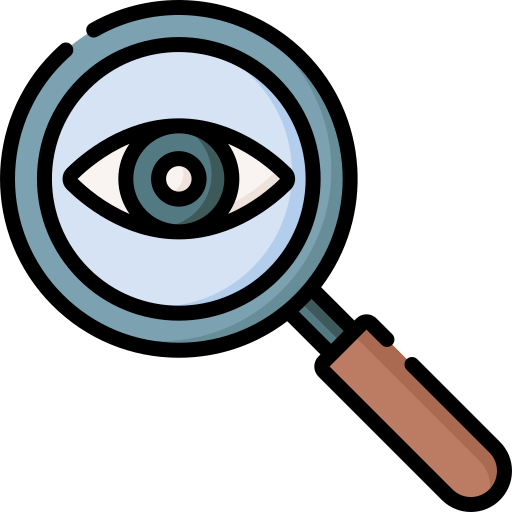 Você Sabia?
Fonte: Nielsen Norman Group. |
3.1 Fundamentos de UX e UI
Antes de criar os wireframes, é importante entender a diferença entre os conceitos de UX e UI, que são complementares mas distintos.
| Conceito | Foco | Exemplo Prático |
|---|---|---|
| UX (User Experience) | Mapear a jornada do usuário para que ela seja intuitiva e sem atritos. | Bom UX: Cadastro de transação em apenas 2 cliques. Mau UX: Exigir o preenchimento de 8 campos obrigatórios no cadastro. |
| UI (User Interface) | Aplicar cores, tipografia e espaçamentos para guiar a atenção do usuário. | Bom UI: Botão "Salvar" contrastante e visível. Mau UI: Texto cinza claro sobre fundo claro, dificultando a leitura. |
Uma forma intuitiva de entender essa relação é através da metáfora do iceberg: o usuário vê apenas a parte visual do seu app (UI), mas toda a qualidade da experiência (UX) — como o fluxo de navegação, a acessibilidade e a arquitetura da informação — está "abaixo da superfície". A Figura 3.1 ilustra essa ideia.
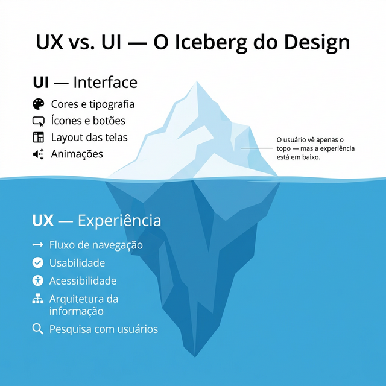
As 10 Heurísticas de Nielsen
Jakob Nielsen definiu 10 princípios de usabilidade que todo designer deve seguir. Os mais relevantes para apps mobile são:
| Heurística | Como aplicar no app |
|---|---|
| Visibilidade do status | Mostre ao usuário o que está acontecendo (loading, sucesso, erro). |
| Correspondência com o mundo real | Use palavras e ícones familiares ao público-alvo. |
| Controle e liberdade | Permita desfazer ações e voltar à tela anterior facilmente. |
| Consistência e padrões | Botões, cores e fontes devem ser padrões em todo o app. |
| Prevenção de erros | Valide dados antes do envio; confirme ações destrutivas (ex: excluir). |
| Reconhecer em vez de lembrar | Mostre as opções disponíveis; não force o usuário a memorizar. |
3.2 Prototipação de Baixa Fidelidade (Wireframes)
Um wireframe é o esqueleto da interface. Trata-se de um esboço simplificado, sem cores ou detalhes visuais, cujo único objetivo é validar a arquitetura da informação e o posicionamento dos elementos. A regra de ouro é: nunca pule esta etapa. Rabiscar um wireframe primeiro (até mesmo no papel) blinda a equipe contra retrabalhos visuais custosos no futuro.
|
Wireframe (baixa fidelidade): representação esquemática de uma tela, usando apenas linhas, retângulos e texto. Foca na disposição dos elementos e no fluxo de navegação, não na aparência final. |
A Figura 3.2 mostra exemplos de wireframes de baixa fidelidade para as telas de Login e Home do app FinanCampus, ilustrando a estrutura e o posicionamento dos elementos antes de qualquer decisão visual de cores ou tipografia.
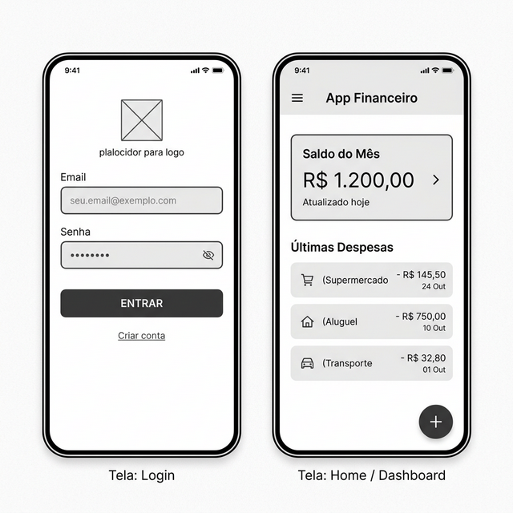
O que Incluir em cada Wireframe
- Cabeçalho da tela (título e ícones de ação)
- Área de conteúdo principal (lista, formulário, mapa, etc.)
- Elementos de navegação (menu inferior, botão de voltar)
- Botões de ação primária e secundária
- Campos de formulário com rótulos
Ferramentas Recomendadas
| Ferramenta | Tipo | Custo |
|---|---|---|
| Balsamiq | Digital (desktop/online) — Baixa fidelidade | Gratuito (trial 30 dias) |
| FlutterFlow | Digital (online) — Alta fidelidade | Gratuito (plano estudante) |
| Draw.io (diagrams.net) | Digital (online) — Baixa fidelidade | Gratuito |
| Papel e caneta | Analógico — Baixa fidelidade | Gratuito |
|
Dica: Fluxo de Prototipação
Utilize o Balsamiq para criar os wireframes de baixa fidelidade. O Balsamiq possui um recurso de geração por IA que permite criar uma primeira versão das telas a partir de prompts de texto — basta descrever a tela desejada e ajustar o resultado. Depois, quando chegar a hora de construir o protótipo de alta fidelidade, utilize o próprio FlutterFlow, que já será a ferramenta de desenvolvimento final do app. |
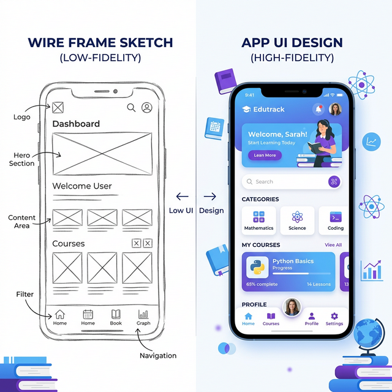
3.3 Documento de Requisitos
O Documento de Requisitos de Software (DRS) consolida tudo o que foi levantado nas semanas 1 e 2, acrescido dos wireframes desta semana. Ele será a referência central do projeto ao longo de todo o semestre.
Estrutura do Documento de Requisitos
- Identificação do Projeto: nome, equipe, data, versão.
- Visão Geral: frase de visão, descrição do problema, público-alvo e persona.
- Requisitos Funcionais: tabela com ID, descrição e prioridade (RF01, RF02...).
- Requisitos Não Funcionais: tabela com categoria e descrição.
- Wireframes: imagens ou prints das telas prototipadas.
- Restrições: limitações técnicas, de prazo ou de equipe.
|
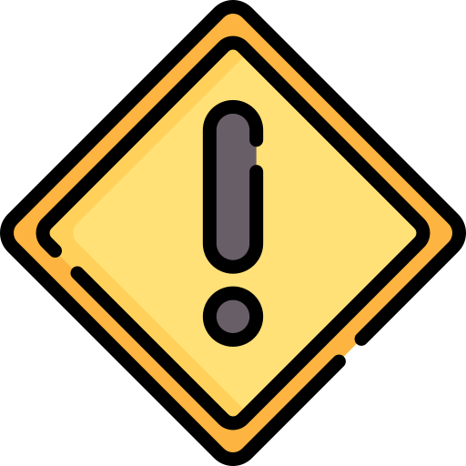 ImportanteO Documento de Requisitos é um documento vivo: ele deve ser atualizado sempre que houver mudanças no escopo do projeto. Mantenha sempre controle de versão (v1.0, v1.1...) e registre as alterações realizadas. |
3.4 Entregável da Semana
|
Resumo da Semana
|
|
Prompt 3.1 — Ideação de Telas com IA
Use o prompt abaixo no recurso de geração por IA do Balsamiq para criar a primeira versão dos wireframes. Depois, ajuste o resultado conforme necessário. Você também pode usar esse prompt em um chatbot de IA (como ChatGPT ou Gemini) para obter sugestões detalhadas de layout antes de desenhar. "Atuando como um UX Designer sênior, crie wireframes de baixa fidelidade para um aplicativo mobile de controle financeiro pessoal voltado para estudantes universitários. O app deve conter as seguintes telas: 1. Login: campos de e-mail e senha; botão "Entrar"; link "Criar conta" para novos usuários; opção de "Esqueci minha senha". 2. Listagem de Transações: barra superior com título da tela e filtro por mês; lista rolável de transações exibindo: ícone da categoria, descrição, valor (verde para renda, vermelho para despesa) e data; botão flutuante (+) para adicionar nova transação; barra de navegação inferior com abas (Transações, Categorias, Gráficos, Configurações). 3. Listagem de Categorias: lista de categorias mostrando ícone e nome de cada uma; botão flutuante (+) para adicionar nova categoria; cada item deve permitir toque para editar; opção de exclusão por deslizar ou menu de contexto. 4. Inserir/Alterar Transação: formulário com: tipo (Dropdown ou segmentado: Renda/Despesa), valor (campo numérico com máscara monetária), categoria (Dropdown com ícones), data (DatePicker com valor padrão = data atual), descrição (campo de texto opcional); botões "Salvar" e "Cancelar"; em modo de edição, exibir botão "Excluir" adicional. 5. Inserir/Alterar Categoria: formulário com: nome da categoria (campo de texto obrigatório), seletor de ícone (grade com ícones pré-definidos, como alimentação, transporte, lazer, saúde, educação, moradia, etc.); botões "Salvar" e "Cancelar". 6. Gráfico de Transações por Categoria: gráfico de pizza ou rosca mostrando a distribuição das despesas por categoria no mês atual; filtro de mês na barra superior; legenda com nome da categoria, valor total e percentual; ao tocar em uma fatia, exibir detalhamento. 7. Orçamento Mensal por Categoria: lista de categorias com barra de progresso mostrando gasto atual vs. orçamento definido; indicador visual (verde/amarelo/vermelho) conforme percentual utilizado; botão para editar o valor do orçamento de cada categoria; resumo no topo com total orçado vs. total gasto no mês." |
Na próxima semana, você dará início à modelagem do banco de dados do projeto, definindo as entidades, seus atributos e os relacionamentos entre elas.
3.5 Estudo de Caso: FinanCampus
Veja como o grupo do FinanCampus realizou a prototipação e documentou os requisitos nesta semana. Os wireframes foram produzidos em duas etapas: primeiro em baixa fidelidade no Balsamiq e, em seguida, como protótipo de alta fidelidade diretamente no FlutterFlow.
|
⚙️ Dica: Crie um e-mail do grupo no Gmail
Antes de começar, o grupo deve criar um e-mail compartilhado no Gmail
(ex.:
Combinado o e-mail, compartilhe a senha com todos os integrantes via chat privado do grupo (não publicamente). Guarde também as credenciais em um local seguro e acessível a todos, como uma nota no Google Keep ou Google Docs. |
Wireframes de Baixa Fidelidade — Balsamiq (Figuras 3.1–3.7)
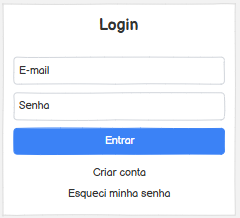
Fig. 3.1 — Login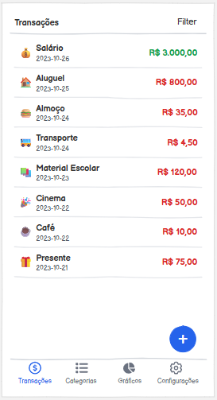
Fig. 3.2 — Listagem de Transações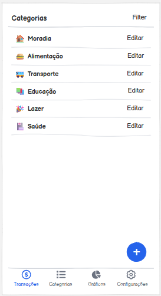
Fig. 3.3 — Listagem de Categorias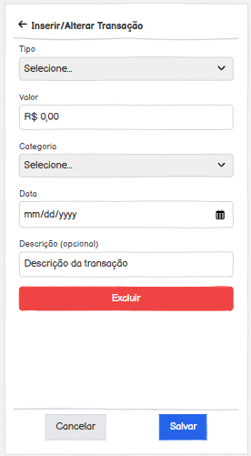
Fig. 3.4 — Inserir/Alterar Transação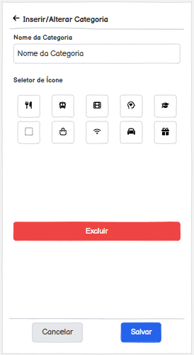
Fig. 3.5 — Inserir/Alterar Categoria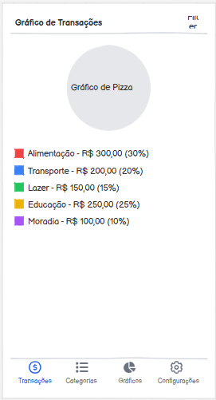
Fig. 3.6 — Gráfico por Categoria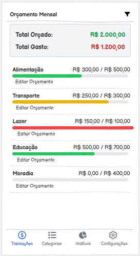
Fig. 3.7 — Orçamento MensalProtótipo de Alta Fidelidade — FlutterFlow (Figuras 3.8–3.13)
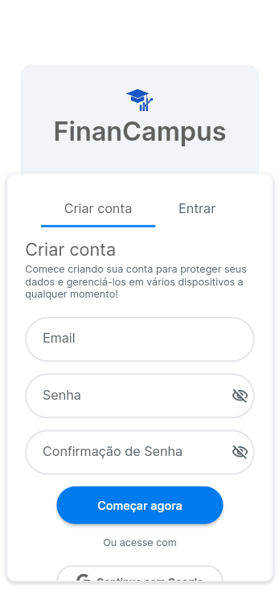
Fig. 3.8 — Login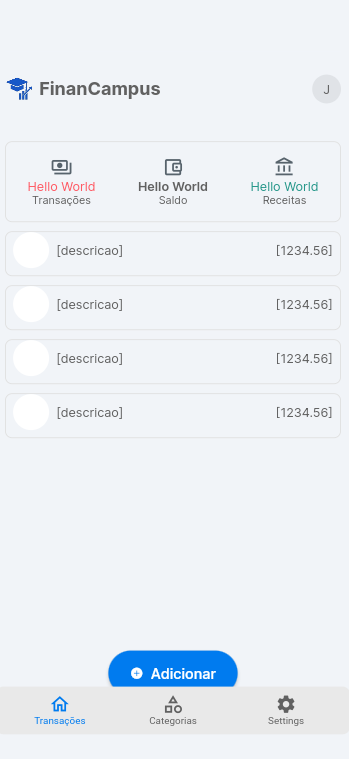
Fig. 3.9 — Listagem de Transações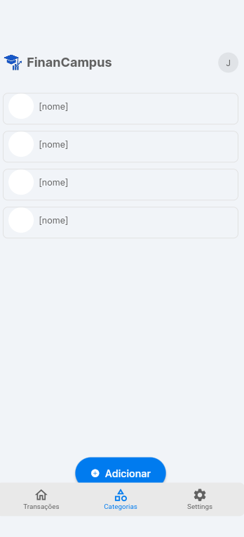
Fig. 3.10 — Listagem de Categorias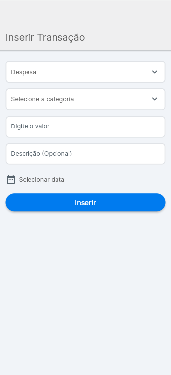
Fig. 3.11 — Inserir/Alterar Transação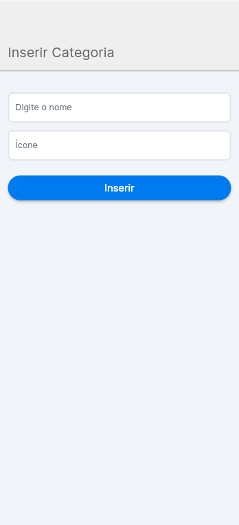
Fig. 3.12 — Inserir/Alterar Categoria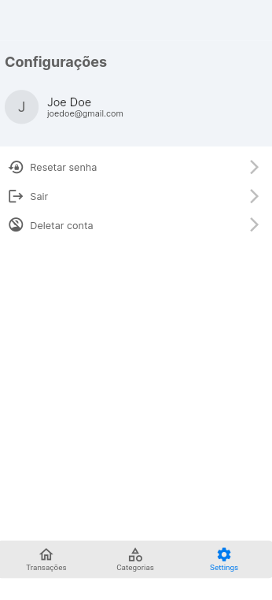
Fig. 3.13 — Configurações|
📱 Estudo de Caso — Semana 3
Wireframes de baixa fidelidade criados no Balsamiq (7 telas):
Protótipo de alta fidelidade (6 telas): as telas foram recriadas diretamente no FlutterFlow, que será a ferramenta de desenvolvimento final do app. Inclui Login, Listagem de Transações, Listagem de Categorias, Inserir/Alterar Transação, Inserir/Alterar Categoria e Configurações. 💡 Quer explorar o projeto? Acesse o link abaixo para clonar o projeto FinanCampus no FlutterFlow e fazer suas próprias alterações: 🔗 Clonar Projeto FinanCampus no FlutterFlow Documento de Requisitos v1.0 entregue com 9 RFs, 4 RNFs, frase de visão, persona da Mariana e prints dos 7 wireframes do Balsamiq. |